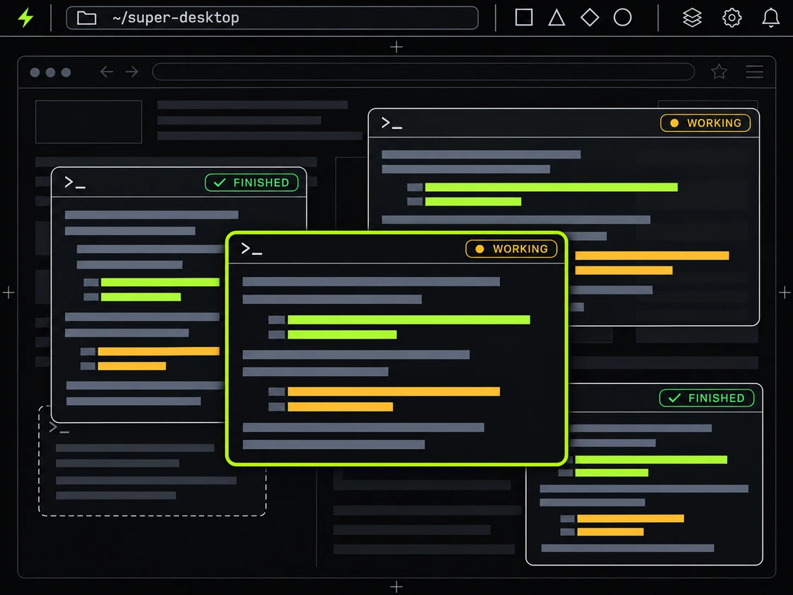
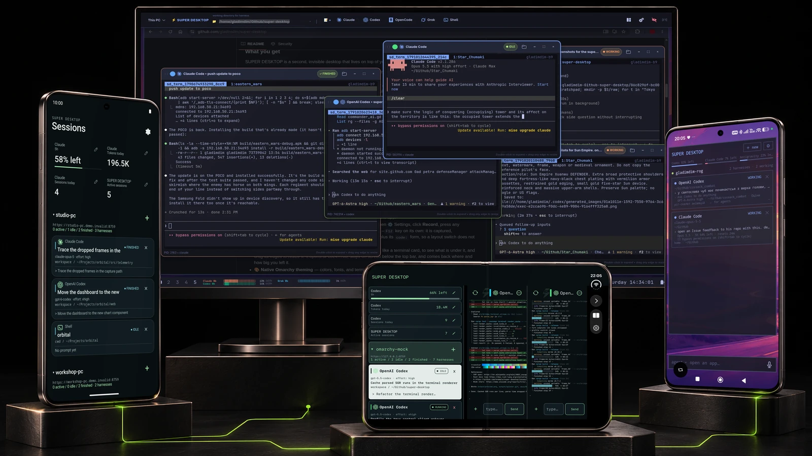

ALL YOUR SHIT IS YOURS.
WE CAN'T LEAK KEYS WE NEVER TOUCH.
Hidden Hyprland overlay for Claude Code, Codex, OpenCode, Grok, Aider, and 14+ coding CLIs. Control every session from Android, iPhone, iPad, or SD Launcher — over your LAN, or Tailscale-ready / over your own VPN (WireGuard, etc.) to reach your harnesses on the go with zero port forwarding, zero accounts, and zero API keys handed over.

CLOUD WRAPPER: [Phone] ──(login + prompt)──> [Vendor Cloud + Stored API Keys] ──> [Your PC] SUPER DESKTOP: [Phone / iOS / SD Launcher] ══(TLS 1.3 + SHA-256 Pin :8759 · LAN / Tailscale / Your VPN)══> [Your PC tmux]
// NO AI KEY VAULT
SUPER DESKTOP contains no LLM SDK and never asks for Anthropic/OpenAI/Gemini keys. It launches the CLIs already installed and signed in on your Linux PC.
// PINNED QR + 6-DIGIT CODE
192-bit single-use QR invite (300s TTL) pins the PC's TLS certificate SHA-256. Both screens show a 6-digit verification code. Reject blocks future asks.
// BUBBLEWRAP & EXIF STRIP
PDF previews rasterize inside a no-network bubblewrap sandbox. Camera photos strip EXIF metadata. Voice clips stay in RAM and transcribe locally via whisper.cpp.
// KEYSTORE & KEYCHAIN
PC stores SHA-256 hashes (0600). Android keeps tokens in Keystore (backups off); iOS uses Keychain (no iCloud sync). Revoke kills live sockets at once.
// OWNER-ONLY SOCKETS
Local CLI & stdio MCP use 0700/0600 sockets with peer UID checks. Destructive MCP actions and Telegram switches start OFF by default.
// HONEST TELEGRAM NOTE
Optional BYOB @BotFather worker runs locally with zero developer relay and secret masking, while noting Telegram Bot API is not E2E encrypted (Mini Web App uses private Tailscale Serve).
// TAILSCALE & PRIVATE VPN READY — ACCESS HARNESSES ON THE GO
Stay on your home Wi-Fi or take your harnesses anywhere: SUPER DESKTOP auto-detects Tailscale during pairing and works cleanly over any private VPN (WireGuard, ZeroTier, OpenVPN, or your own home VPN). Switch from Wi-Fi to mobile data without re-pairing, with zero public ports exposed and zero third-party relays. See Tailscale setup →
sha256sum -c SUPER-DESKTOP-2.3.1.apk.sha256 · ss -tlnp | grep super-desktop (:8759 TLS only)
super-desktop.gpg · privacy.html · privacy-ios.html · SECURITY.md

OMARCHY LINUX (v2.2.0)
Prebuilt signed x86_64 & aarch64 Pacman packages (no Rust/compilation), tmux cards, SD Editor, QML plugins, multi-PC sync, headless boot, CLI & MCP.
ANDROID FREE APK (2.3.1)
Free forever. No trial, no Play Billing, no Google Play required. Studio UI, voice, camera, localhost previews.
GOOGLE PLAY EDITION
Automatic store updates. 0 accounts, 0 analytics. 10-day usage trial + optional one-time Pro (no subscription).
IPHONE & IPAD (APP STORE)
SUPER DESKTOP: AI Agents. Keychain-pinned, widgets, Share sheet, local notifications. 10-day trial + one-time Pro.
SD LAUNCHER (1.15.0 APK)
Omalauncher fork with built-in agent pages, terminal & usage widgets, plus optional tiling desktop & Arch ARM.
TELEGRAM BYOB & MINI APP
Your own @BotFather bot + 2-member Forum Topics + live ANSI Mini Web App over private Tailscale Serve.


100% CLI & LOCAL MCP SUPPORT — LET YOUR AI AGENTS DRIVE IT TOO.
Every workspace action is scriptable over structured JSON CLI and local stdio MCP (2025-11-25 & 2025-03-26) — with zero open network ports and per-category permission switches.
// 88 LOCAL MCP TOOLS
14 read-only metadata tools out of the box; enable terminal I/O, prompts, files, notes, layouts, SD Editor buffers, plugins, Telegram, peers, and admin in Settings → MCP (default OFF).
// ZERO NETWORK PORT
super-desktop mcp serve speaks strictly over local stdio and owner-only 0700/0600 Unix sockets with peer-UID verification.
// IDEMPOTENT RECEIPTS
--request-id writes to a durable 4,096-entry local journal so retrying a timed-out launch, move, or close never runs it twice.
// STRUCTURED JSON CLI
schema --format json, capabilities, harness launch --prompt, terminal capture/follow/attach, terminal viewport, and peer commands.
{
"mcpServers": {
"super-desktop": {
"command": "super-desktop",
"args": ["mcp", "serve"]
}
}
}What is SUPER DESKTOP?
SUPER DESKTOP is a free, open-source (GPL-3.0) workspace for your AI coding agents on Omarchy Linux (Arch Linux with Hyprland). Press SUPER + SHIFT + Q and every agent you run appears in its own live terminal card. Press it again and they hide, still running in background tmux. Reach the same sessions from your other PCs, Android, iPhone, iPad, SD Launcher, or Telegram.
Does SUPER DESKTOP send my code, prompts, or API keys anywhere?
No. There are no SUPER DESKTOP servers, no accounts, no API key vault, no analytics, and no tracking. Prompts, terminal output, files, and pictures travel directly between your own devices over certificate-pinned TLS 1.2/1.3 (LAN, Tailscale, or your private VPN). Your AI agents still talk to their own providers as they normally do.
Which AI coding agents does it support?
Claude Code, Codex, OpenCode, Grok, Antigravity, Pi, Aider, Reasonix, DeepSeek, Hermes, Goose, Qwen Code, Crush, Kimi, Kiro, Cursor Agent, a plain shell, and any custom command you add.
Why are there both a free Android APK and paid Google Play / App Store editions?
The GitHub Android APK and SD Launcher APK are free forever with all features unlocked and zero Play Billing. Google Play and the App Store provide store auto-updates with a 10-day trial and an optional one-time Pro purchase (never a subscription, never an account).
Does it work away from home or on a headless PC?
Yes. Pair over Wi-Fi, Tailscale, or your own VPN (WireGuard, ZeroTier, OpenVPN). Enable Settings → System launch (plus loginctl enable-linger) and SUPER DESKTOP restores your agents automatically on boot even with no monitor and nobody logged in.
Do I need Rust or a compiler to install SUPER DESKTOP?
No. install.sh installs prebuilt GPG-signed super-desktop-bin Arch/Omarchy packages for x86_64 and aarch64 from https://superdesktop.dmytrogladkyi.com/repo/$arch (key fingerprint EBCB860628250D70F3C4D033304840D354676353), updated automatically via omarchy update. Set SUPER_DESKTOP_BUILD_FROM_SOURCE=1 if you want to compile from source instead.
Can AI agents control SUPER DESKTOP?
Yes. super-desktop provides structured JSON CLI commands with idempotent --request-id receipts, and super-desktop mcp serve exposes up to 88 tools over local stdio with granular opt-in switches in Settings → MCP.
INSTALL IN 10 SECONDS — PREBUILT PACKAGES OR BUILD FROM SOURCE.
Every Linux package ships native binaries (super-desktop, super-desktop-client, and sd-qml-host) for both x86_64 and aarch64 (ARM64) — signed with Ed25519 GPG key EBCB860628250D70F3C4D033304840D354676353 (super-desktop.gpg). Pick the install variant that fits your workflow:
| Install Method | CPU Platforms | Rust / Compiler | Updates | Best For |
|---|---|---|---|---|
1. install.sh (Default) |
x86_64, aarch64 |
None (~10s) | Automatic (omarchy update) |
Fastest 1-command Omarchy setup |
2. Manual Pacman Repo (super-desktop-bin) |
x86_64, aarch64 |
None (~10s) | Automatic (omarchy update / pacman -Syu) |
Users who skip curl | bash |
3. Direct .pkg.tar.zst / Pinned Tag |
x86_64, aarch64 |
None (binary releases) | Manual (pacman -U, or add repo later) |
Version pinning / offline install |
| 4. Build from Source (Rust / Git) | Any Arch / Omarchy | Rust 1.92+ & base-devel |
In-app Settings → Updates or ./rebuild.sh |
Developers, master branch, custom patches |
curl -fsSL https://raw.githubusercontent.com/gladimdim/super-desktop/master/install.sh | bash// 1. VERIFIES & REGISTERS
Detects x86_64 or aarch64, verifies key EBCB860628250D70F3C4D033304840D354676353, writes /etc/pacman.d/super-desktop.conf, and installs an Omarchy pre-refresh-pacman hook.
// 2. SAFE PACMAN INSTALL
Guards against Arch partial library upgrades (runs omarchy update first if needed) and installs super-desktop-bin + runtime deps with zero Rust compilation.
// 3. SETUP & MIGRATION
Runs super-desktop-setup (or --migrate on earlier source installs), preserves notes/shortcuts/settings, reloads Hyprland, and restarts the daemon cleanly.
Want to inspect before running? Read install.sh on GitHub. If the binary repo is not yet active for your architecture or release tag, install.sh automatically falls back to building from source.
Prefer a minimal script just for the signed Pacman repo (without the full install.sh wrapper)? Paste this one-liner to verify key EBCB860628250D70F3C4D033304840D354676353, configure /etc/pacman.d/super-desktop.conf + Omarchy refresh hook, install super-desktop-bin, and run super-desktop-setup:
curl -fsSL https://superdesktop.dmytrogladkyi.com/install/pacman-repo.sh | bash[VIEW pacman-repo.sh ↗] · Works on both x86_64 and aarch64, zero Rust/compilers required.
curl -fsSL https://superdesktop.dmytrogladkyi.com/install/pacman-hook.sh | bash[VIEW pacman-hook.sh ↗] · Optional standalone Omarchy pre-refresh-pacman hook (keeps [super-desktop] enabled when switching channels).
Or copy the raw manual commands (no curl | bash)
curl -fsSL https://superdesktop.dmytrogladkyi.com/repo/super-desktop.gpg -o /tmp/super-desktop.gpg
gpg --show-keys --with-fingerprint /tmp/super-desktop.gpg # expect EBCB 8606 2825 0D70 F3C4 D033 3048 40D3 5467 6353
sudo pacman-key --add /tmp/super-desktop.gpg && sudo pacman-key --lsign-key EBCB860628250D70F3C4D033304840D354676353
printf '[super-desktop]\nSigLevel = Required DatabaseRequired\nServer = https://superdesktop.dmytrogladkyi.com/repo/$arch\n' | sudo tee /etc/pacman.d/super-desktop.conf
grep -qxF 'Include = /etc/pacman.d/super-desktop.conf' /etc/pacman.conf || echo 'Include = /etc/pacman.d/super-desktop.conf' | sudo tee -a /etc/pacman.conf
sudo pacman -Syu super-desktop-bin && super-desktop-setup/usr/bin/super-desktop-setup --migrate instead, then restart: /usr/bin/super-desktop kill && /usr/bin/super-desktop toggle.
mkdir -p ~/.config/omarchy/hooks/pre-refresh-pacman.d
cat <<'EOF' > ~/.config/omarchy/hooks/pre-refresh-pacman.d/super-desktop
#!/bin/bash
CONF=/etc/pacman.conf
SNIPPET=/etc/pacman.d/super-desktop.conf
MARKER="Include = $SNIPPET"
[[ -r $SNIPPET ]] || exit 0
grep -qxF "$MARKER" "$CONF" && exit 0
if grep -q '^\[omarchy\]' "$CONF"; then
sudo sed -i "0,/^\[omarchy\]/s||$MARKER\n\n[omarchy]|" "$CONF"
else
printf '\n%s\n' "$MARKER" | sudo tee -a "$CONF" >/dev/null
fi
EOF
chmod 755 ~/.config/omarchy/hooks/pre-refresh-pacman.d/super-desktopInstall a prebuilt .pkg.tar.zst directly from GitHub Releases (verified against SHA256SUMS, no repo added to /etc/pacman.conf). Adding the [super-desktop] repo later still upgrades it cleanly in place.
curl -fsSL https://superdesktop.dmytrogladkyi.com/install/direct-pkg.sh | bash[VIEW direct-pkg.sh ↗] · Fetches the newest binary release for your CPU (x86_64 or aarch64) and verifies SHA256SUMS.
curl -fsSL https://superdesktop.dmytrogladkyi.com/install/direct-pkg.sh | VER=2.2.0 bashPin any exact binary release via VER=X.Y.Z (for older pre-binary tags like v2.1.2, run install.sh with SUPER_DESKTOP_VERSION=v2.1.2).
Or copy the raw pacman -U commands
ARCH=$(uname -m)
VER=2.2.0 # pick any binary release on GitHub Releases
sudo pacman -U "https://github.com/gladimdim/super-desktop/releases/download/v${VER}/super-desktop-bin-${VER}-1-${ARCH}.pkg.tar.zst"
super-desktop-setupSHA256SUMS.Want to compile locally, track unreleased commits on master, or use in-app ⚙ Settings → Updates rebuilds? These scripts install Rust 1.92+ via rustup (--no-modify-path) and build release binaries + sd-qml-host under ~/.local/share/super-desktop/source:
curl -fsSL https://superdesktop.dmytrogladkyi.com/install/source.sh | bash[VIEW source.sh ↗] · Compiles the latest tagged release from source instead of fetching super-desktop-bin.
curl -fsSL https://superdesktop.dmytrogladkyi.com/install/master.sh | bash[VIEW master.sh ↗] · Compiles and tracks unreleased commits on master.
Or clone and build manually for local development
git clone https://github.com/gladimdim/super-desktop.git
cd super-desktop && ./install.sh
# after local edits:
./rebuild.sh~/.local/bin/super-desktop to your clone.